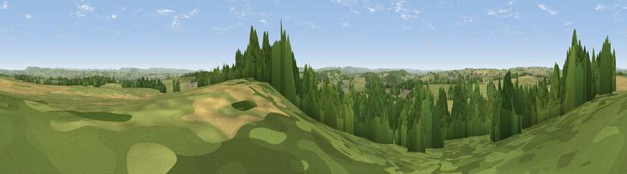

Viewpoint near Purse Caundle
#11895 in England · top 19% of its area beats it · near Purse CaundleWhere it is
The exact computed spot (ST 69925 19425). Click the marker for map links.
The view, rendered

A 360° render of this exact spot computed from the terrain model, tree cover and land cover — summer colours, afternoon light, calibrated against photographs of famous viewpoints. Real trees, hedges and buildings will differ in detail.
The panorama
Grey silhouette: terrain skyline in each direction (720 bearings, Earth curvature and refraction included). Dashed green: skyline with trees (+15 m) and buildings (+8 m) as obstacles. Blue strip: how far the ground is visible on each bearing.
Where the view opens
Wedge length = distance to the farthest visible ground on that bearing (vegetation-aware). Rings at 10, 25 and 50 km.
What fills the view
52% grassland · 27% woodland · 20% cropland · 1% built-up
Angular shares of the visible panorama (visual magnitude), not map area. Landscape diversity 0.46 (0–1 Shannon).
Key numbers
More beautiful places nearby
The staircase of upgrades: each row has a higher view potential than everything closer. Driving times are estimates from straight-line distance, calibrated against real road routing — check an actual route before setting out.
| Place | Direction | Drive | Score |
|---|---|---|---|
| Round Hill | W · 7 km | ~15 min | 70.4 |
| The Beacon | WNW · 8 km | ~16 min | 75.8 |
| Viewpoint near Lamyatt | N · 17 km | ~29 min | 77.8 |
| Viewpoint near Berwick St John | E · 23 km | ~37 min | 78.2 |
| Viewpoint near Nettlecombe | SSW · 29 km | ~46 min | 79.3 |
| Viewpoint near Askerswell | SSW · 29 km | ~46 min | 81.7 |
| Lewesdon Hill | SW · 32 km | ~49 min | 83.3 |
| The Knoll | SSW · 36 km | ~54 min | 91.0 |
50.97345, -2.42972 · source: screening · position refined by local search. Computed location — check access rights before visiting.